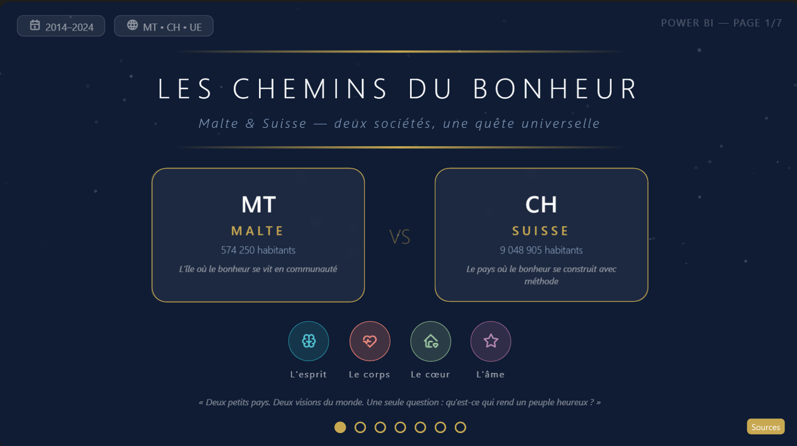
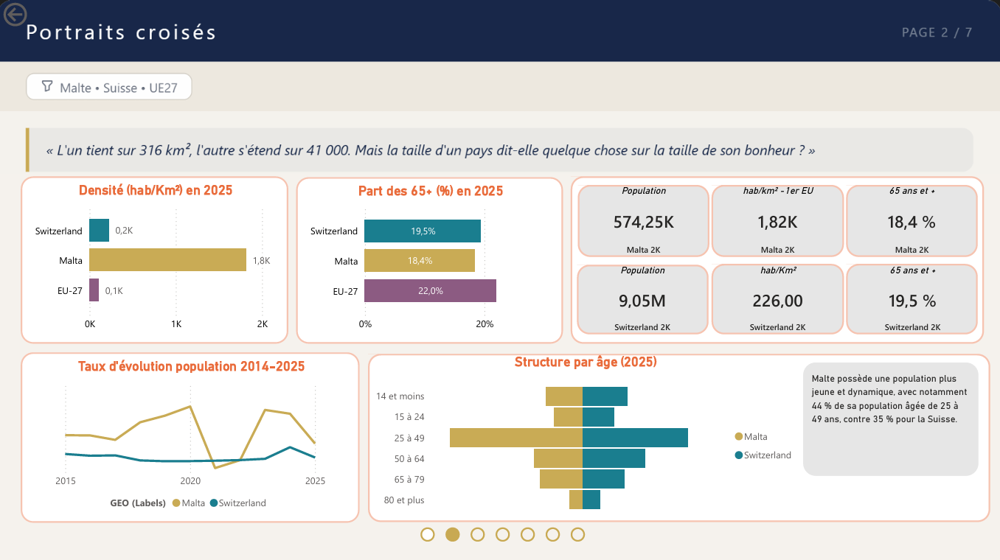
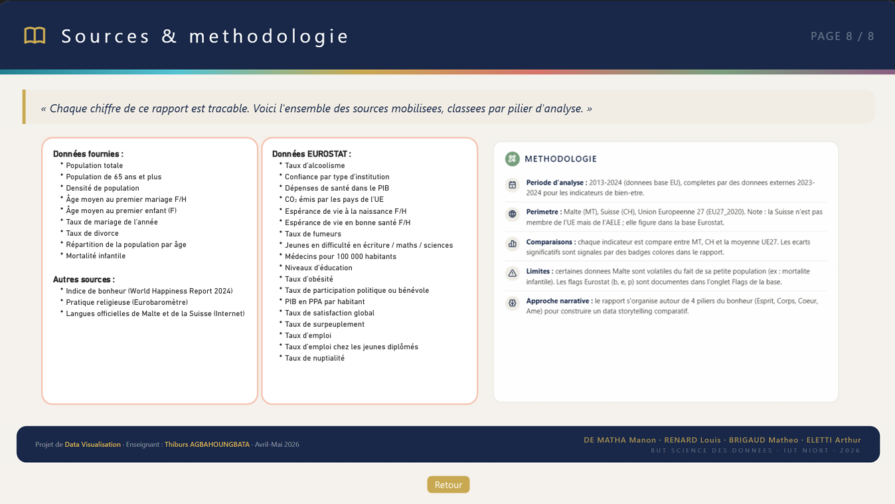

📊 Projet - Tableaux de bord Power BI
Avec Power BI et les données d'Eurostat, mise en comparaison de Malte et de la Suisse avec le bonheur comme fil narratif, à travers l'utilisation de nombreux indicateurs.
Après avoir suivi des cours sur l'outil Power BI dispensés par un vacataire (intervenant professionnel), ce dernier nous a proposé un projet pour nous entraîner sur l'outil et sur la création de tableaux de bord. La demande était la suivante : choisir 2 pays d'Europe afin de créer un tableau de bord dynamique pour les mettre en comparaison. Il fallait trouver au moins 5 ressemblances entre les 2 pays, 5 différences entre les 2 pays et 5 points sur lesquels ils s'éloignent de la moyenne européenne.
Nous avions à notre disposition un jeu de données ainsi que la possibilité d'en ajouter par nous-mêmes. Pour notre part, nous avons chargé plus de 20 jeux de données différents, venant pour la plupart d'Eurostat (organisme gestionnaire des données et enquêtes sur les pays d'Europe).
Mon groupe était constitué de 4 membres. Nous avons choisi Malte et la Suisse comme pays. De plus, nous avons choisi le bonheur comme fil conducteur, afin de mettre en lumière différents aspects de ces deux pays. L'objectif était de « raconter une histoire » portée sur le bonheur, pour immerger le lecteur dans la découverte de ces 2 pays à travers notre tableau de bord.
La principale difficulté a été de s'habituer à Power BI, notamment à ses options de personnalisation et de mise en forme des graphiques. De plus, la recherche de données externes a représenté une charge de travail importante.


